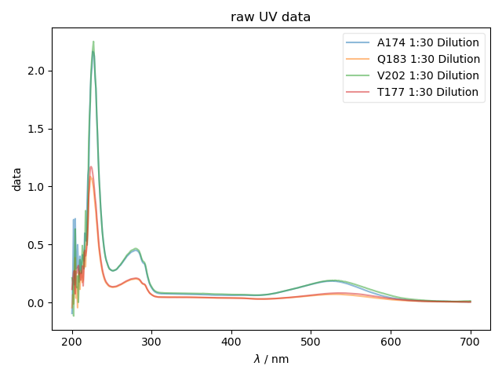
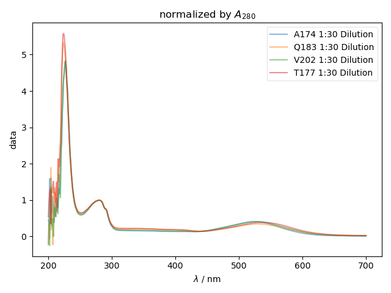

Note
Click here to download the full example code
Simple Cary UV-Vis loading¶
A simple demo of loading Cary UV-Vis data. This example just loads a file and plots all the spectra in a file, without embellishment
Here we have a file called Pure_T177R1a_pR_210615.BSW on our computer. There are three requirements for where this file must be stored:
It must be stored in a folder called “proteorhodopsin” that’s itself inside a folder called “UV_Vis” (as indicated by the
exp_typeargument). Typically, this will be achieved by just cloning/syncing the entire “UV_Vis” directory of data shared by your lab on google drive, etc, etc.Our pyspecdata config file (
~/.pyspecdataon Linux/Mac or~/_pyspecdataon Windows) must know about this “UV_Vis” directory. If not, you can use thepyspecdata_register_dircommand on the command line (seeregister_directory()).The name of the file itself must contain the string “T177R1a_pR_210615” → note that you don’t need to specify the whole file name, just enough for it to be unique.
- 
- 
Out:
the experiments present in this file are: dict_keys(['1:30 Dilution'])
the experiments present in this file are: dict_keys(['1:30 Dilution'])
the experiments present in this file are: dict_keys(['1:30 Dilution'])
the experiments present in this file are: dict_keys(['1:30 Dilution'])
from pylab import *
from pyspecdata import *
with figlist_var() as fl:
for this_filename in ['A174', 'Q183', 'V202', 'T177']:
data = find_file(this_filename,
exp_type='proteorhodopsin/NP_220209')
print("the experiments present in this file are:",data.keys())
for j in data.keys():
fl.next("raw UV data")
fl.plot(data[j], label=this_filename+' '+j, alpha=0.5)
fl.next('normalized by $A_{280}$')
normalization = data[j][r'$\lambda$':(250,300)].max()
fl.plot(data[j]/normalization, label=this_filename+' '+j, alpha=0.5)
Total running time of the script: ( 0 minutes 0.493 seconds)